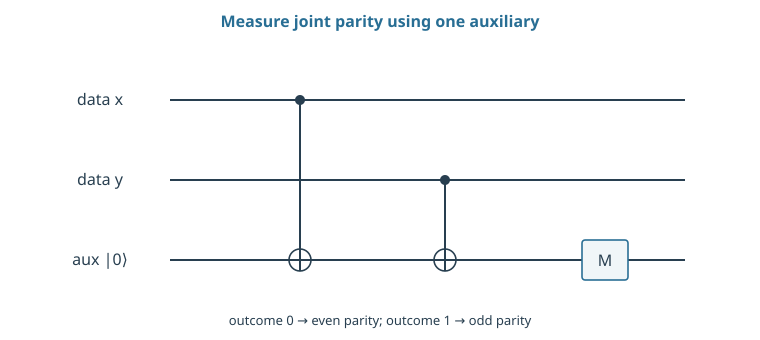
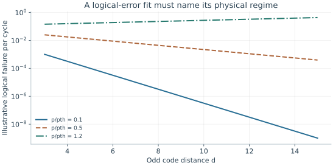

Starting point: Chapters 1–17; physical concepts and approximations are introduced as needed.
Anchor example: Repeated parity measurements with imperfect data and auxiliaries.
This lesson includes explanations, worked examples, and problems with solutions. Advanced results whose proofs are outside the chapter are identified explicitly.
18.1 Syndrome Extraction
A parity measurement should reveal whether two data bits agree without revealing either bit. Implementing that distinction is the first hardware task of error correction.
18.1.1 Physical parity circuits
Prepare an auxiliary in zero and apply data-controlled CNOTs from x and y. The first writes x onto the auxiliary; the second adds y modulo two, leaving \(\ket{x,y,x\oplus y}\). Measuring the auxiliary therefore records agreement or disagreement without individually measuring x and y.
By linearity, \(a\ket{00}+b\ket{11}\) leaves the auxiliary in zero, preserving its internal coherence. The odd sector \(a\ket{01}+b\ket{10}\) leaves it in one. A superposition across the two sectors is projected by the measurement, as required for a parity check. The signal is the eigenvalue of \(Z_1Z_2\), with auxiliary bit zero representing +1 and one representing −1. This ideal circuit’s behavior is a starting specification for its physical implementation.
18.1.2 Measurement faults and repetition
If a reported parity changes between rounds, either the data changed or one of the two reports was wrong. Repeating checks provides a history that helps distinguish these explanations. For three independent reports of a constant parity with assignment error e, majority voting fails with probability \(3e^2(1-e)+e^3\). At e=0.01 that is 0.000298.
The assumption of constant parity is strong: real data errors can occur during the three measurements. Moreover, errors propagate through gates. Under a CNOT, an X on the control propagates to control and target; a Z on the target propagates to both. An auxiliary fault can therefore spread to more than one data qubit depending on its role and ordering. Repetition alone does not certify fault tolerance.

The ideal circuit preserves coherence within each parity sector. Two data wires and one auxiliary wire are shown; gate faults and repeated noisy measurements require a separate analysis.
Problem 18.1. What happens when the parity circuit receives (|00⟩ + |11⟩)/√2?
Worked solution
Both components put the auxiliary in zero, so its measurement leaves their superposition intact in the ideal circuit. Measuring the two data qubits individually would instead reveal which component was present.
18.2 Logical Operations
18.2.1 Code distance and decoding
Code distance d is the smallest weight of an undetectable nontrivial logical Pauli. If two candidate errors each affect at most t qubits, their product affects at most 2t. When \(2t<d\), that product cannot be a nontrivial logical Pauli. This is the reason a distance-d code can correct up to \(\lfloor(d-1)/2\rfloor\) arbitrary qubit errors given ideal syndrome information and an appropriate recovery.
Noisy extraction requires a spacetime model: the decoder interprets changes across rounds rather than treating one set of readouts as exact. A single faulty entangling gate may create more than one data error, so physical circuit locations cannot simply be equated with independent final-qubit errors. The code, schedule, noise, and decoder jointly determine logical performance.
18.2.2 Gates and auxiliary states
A logical gate must transform the encoded state while keeping faults controllable. Transversal operations act separately on corresponding physical qubits, limiting direct propagation within a block. Other constructions move code boundaries or measure joint logical observables between patches. These procedures take cycles and temporary physical space.
For some universal gate constructions, prepared auxiliary states are consumed. If a factory delivers one usable state every F cycles but the algorithm requests one every A cycles, sustained execution must slow down or use more factories when F exceeds A. An ideal gate count that omits this production misses a potential bottleneck. This chapter does not derive a universal fault-tolerant gate set; it derives the hardware accounting that such a chosen construction must satisfy.
Problem 18.2. How many arbitrary physical-qubit errors can a distance-5 code correct with perfect syndrome information?
Worked solution
At most floor((5−1)/2) = 2. This does not mean that every pair of faulty circuit locations is harmless; faults can propagate to multiple data qubits.
18.3 Hardware Requirements
18.3.1 Leakage, correlation, and latency
Suppose a leaked data qubit persists for many rounds and interacts with each fresh auxiliary. The resulting syndrome faults can be strongly correlated in time even if the original leakage event was rare. Likewise, one shared-control failure can affect many qubits in the same cycle. An independent Pauli-error fit may miss both mechanisms.
Measure repeated extraction in its full simultaneous context. Include reset, leakage removal, readout crosstalk, and decoding deadlines. A pipeline may process checks continuously while delaying corrections, but operations requiring resolved feed-forward still face latency. Report the logical error per cycle together with the cycle duration; reducing one at the expense of the other changes the computation’s elapsed-time reliability.
18.3.2 Thresholds and overhead
For an illustrative local-error model below threshold, logical failure is often fitted by \(p_L\simeq A(p/p_{\rm th})^{(d+1)/2}\) for odd d. The exponent is motivated by the minimum number of local faults capable of defeating correction, while A and \(p_{\rm th}\) summarize the chosen code, circuit, and decoder. This is a fit, not a universal theorem.
A distance increase from three to five changes the illustrative values from \(10^{-3}\) to \(10^{-4}\) when A=0.1 and \(p/p_{\rm th}=0.1\). If K logical cycles have independent failure probability \(p_L\), requiring total failure at most ε approximately demands \(Kp_L\leq\epsilon\) in the small-error regime. With K=10,000 and ε=0.01, the target is about \(10^{-6}\) per cycle, showing why a favorable single-cycle number may still imply substantial overhead.

The illustrative fit A(p/pth)^((d+1)/2), with A = 0.1, improves with distance only below its assumed threshold. It is not a universal theorem or a prediction from one average gate fidelity.
Problem 18.3. Use \(A=0.1\), \(p/p_{\rm th}=0.1\). Compare distances 3 and 5 in the illustrative fit.
Worked solution
The estimates are \(10^{-3}\) and \(10^{-4}\). Increasing distance improves this model at the cost of more qubits and operations; a real estimate must validate its noise assumptions.
We can now evaluate a processor through the computation it can carry out, with the full preparation, control, measurement, and correction costs included.
Worked model check. A computation has 10,000 logical cycles and a 1% total-failure budget. What approximate per-cycle logical target follows from an independent small-error model?
Worked solution
\(p_L\lesssim0.01/10000=10^{-6}\). The exact constraint is \(p_L\leq1-0.99^{1/10000}\); correlated failures require another analysis.
These exercises draw on the whole chapter. Attempt each question before opening a hint, explain your reasoning, then compare it with the worked solution.
How many arbitrary physical-qubit errors can a distance-\(7\) code correct with perfect syndrome information, and how many can it detect? Why must the corrected number be less than half the distance?
Hint 1
Correctable: \(\lfloor(d-1)/2\rfloor\).
Hint 2
Two candidate errors of weight \(t\) combine to weight at most \(2t\).
Worked solution
It corrects \(3\) errors and detects up to \(6\). If two different errors each of weight at most \(t\) gave the same syndrome, their product, of weight at most \(2t\), would be undetectable; for \(2t<d\) that product cannot be a nontrivial logical operator, so the decoder can identify the error. At \(t=4\), two weight-\(4\) errors could combine into a weight-\(8\ge7\) logical operator and be confused.
A constant parity is reported five times, each report wrong independently with probability \(e=0.01\). Find the probability that a majority vote is wrong. Compare with three reports.
Hint 1
Majority of five fails with three or more wrong reports.
Hint 2
Three reports gave \(2.98\times10^{-4}\).
Worked solution
\(10e^3(1-e)^2+5e^4(1-e)+e^5\approx9.9\times10^{-6}\), compared with \(2.98\times10^{-4}\) for three reports. Two extra rounds cut the voting error thirtyfold, but only if the parity stays constant: data errors during the extra rounds, and the extra time for errors to accumulate, are the real costs.
A magic-state factory delivers one state every \(F=50\) cycles, and the algorithm consumes one every \(A=20\) cycles. How many factories are needed to keep up? If only one is available, by what factor does the computation slow?
Hint 1
Factories needed: \(\lceil F/A\rceil\).
Hint 2
Slowdown with one factory: \(F/A\).
Worked solution
\(\lceil50/20\rceil=3\) factories. With one, the computation waits \(2.5\) times longer for each state, so the factory-limited part runs \(2.5\) times slower. Space for factories (more physical qubits) and time (slower execution) trade against each other in a resource estimate.
In a \(Z_1Z_2\) parity check, CNOTs run from data qubit 1 to the auxiliary, then from data qubit 2 to the auxiliary. (a) An \(X\) error hits the auxiliary between the CNOTs. What happens to the data and to the measured result? (b) A \(Z\) error hits the auxiliary between the CNOTs. Using the rule that a \(Z\) on a CNOT target propagates to the control, what happens? (c) What does this imply about auxiliary faults?
Hint 1
An \(X\) on the target is not copied to the control.
Hint 2
A \(Z\) on the target before the second CNOT becomes \(Z\) on data qubit 2 and the auxiliary.
Worked solution
(a) An \(X\) on the target passes through the second CNOT unchanged and flips the measured parity: a measurement error, with no damage to the data. (b) A \(Z\) on the auxiliary before the second CNOT propagates to its control, so data qubit 2 acquires a \(Z\) error, while the auxiliary’s \(Z\) does not affect its \(Z\)-basis readout. (c) One fault on the auxiliary can become an error on a data qubit, and in longer checks one auxiliary fault can spread to several data qubits. The check order and the code must be chosen so that such spread errors remain correctable.
Use the fit \(p_L\approx A(p/p_{\rm th})^{(d+1)/2}\) with \(A=0.1\) and \(p/p_{\rm th}=0.2\). (a) Evaluate \(p_L\) for \(d=3,5,7\). (b) Find the smallest odd \(d\) that reaches \(p_L\le10^{-6}\). (c) If a code patch needs about \(2d^2\) physical qubits, how many does one logical qubit need?
Hint 1
\((d+1)/2\ge\log(10^{-5})/\log(0.2)\approx7.15\).
Hint 2
\(2\times15^2\).
Worked solution
(a) \(d=3\): \(4\times10^{-3}\); \(d=5\): \(8\times10^{-4}\); \(d=7\): \(1.6\times10^{-4}\). (b) Need \(0.2^{(d+1)/2}\le10^{-5}\), so \((d+1)/2\ge7.15\), giving \(d=15\) (exponent \(8\)): \(p_L\approx2.6\times10^{-7}\). (c) About \(2\times225=450\) physical qubits per logical qubit. Being only five times below threshold makes the overhead large; at \(p/p_{\rm th}=0.1\) the same target needs \(d=9\).
A repeated parity check reports, over five rounds, either (a) \(0,0,1,0,0\) or (b) \(0,0,1,1,1\). Measurement errors occur with probability \(e=0.01\) per report and data flips with probability \(p=0.001\) per round. For each history, compare the probability of the two simplest explanations, and decide what happened.
Hint 1
(a): one wrong report, or a data flip followed by a flip back.
Hint 2
(b): a data flip, or three wrong reports in a row.
Worked solution
(a) One wrong report has probability about \(e=10^{-2}\); two data flips (at round 3 and back at round 4) about \(p^2=10^{-6}\). The isolated flip is almost certainly a measurement error. (b) A single data flip before round 3 has probability about \(p=10^{-3}\); three consecutive wrong reports about \(e^3=10^{-6}\). It was almost certainly a data error. Decoders reason over the history of reports in this way, treating space and time together.
A data qubit leaks and stays leaked for \(20\) rounds. Each round, its two adjacent parity checks give random results while it is leaked. (a) Roughly how many changes (detection events) do these two checks show over the \(20\) rounds? (b) Why does this pattern confuse a decoder built for independent Pauli errors? (c) What hardware feature limits the damage?
Hint 1
A random result differs from the previous one with probability \(\frac12\).
Hint 2
Expected changes per check \(\approx\frac12\times20\).
Worked solution
(a) Each check changes with probability about \(\frac12\) per round, so about \(10\) detection events per check, \(20\) in total, from one physical event. (b) A decoder expecting independent errors interprets this cluster as many separate errors and may apply a large, wrong correction, or exceed the correctable weight, causing a logical error. (c) Leakage-reduction units or periodic resets return leaked qubits to the computational space within a round or two, converting a long correlated burst into a short, correctable one.
A student argues: “A distance-\(5\) code corrects any two errors, so any two faulty gates in a syndrome cycle are corrected.” Using the propagation result from the worked problem above, explain why this can fail, and how codes and circuits are designed to prevent it.
Hint 1
A single auxiliary fault can become an error on a data qubit.
Hint 2
A weight-four check can spread one fault to two data qubits.
Worked solution
A single fault in an extraction circuit can produce errors on more than one data qubit, for example a \(Z\) on an auxiliary midway through a weight-four check spreads to the remaining controls. Then two faulty gates can produce three or four data errors, beyond what distance \(5\) corrects. Fault-tolerant designs order the CNOTs so that spread errors align harmlessly with the code’s structure, use flag qubits to detect dangerous spreads, or choose codes whose distance accounts for such “hook” errors.
A computation runs \(K=10^8\) logical cycles with a total failure budget of \(1\%\). (a) Find the per-cycle logical error target. (b) Using \(p_L\approx0.1(p/p_{\rm th})^{(d+1)/2}\) with \(p/p_{\rm th}=0.1\), find the smallest odd distance that meets it. (c) How does the required distance grow with the length of the computation?
Hint 1
\(Kp_L\le0.01\).
Hint 2
\(0.1\times0.1^{(d+1)/2}\le10^{-10}\).
Worked solution
(a) \(p_L\le10^{-10}\). (b) \(0.1^{(d+1)/2}\le10^{-9}\) needs \((d+1)/2\ge9\), so \(d=17\). (c) Because \(p_L\) falls exponentially in \(d\), the required distance grows only logarithmically with \(K\): each factor of ten in computation length adds about two to the distance at this noise level. Long computations are affordable if the hardware is well below threshold.
A transversal CNOT between two code blocks applies a physical CNOT between qubit \(i\) of the first block and qubit \(i\) of the second, for every \(i\). (a) Show that a single faulty physical CNOT produces errors on at most one qubit in each block. (b) Why does this keep a distance-\(3\) code correctable after the gate? (c) Contrast with a circuit in which one physical qubit of block 1 interacts with all qubits of block 2.
Hint 1
Each physical CNOT touches one qubit per block.
Hint 2
Errors on one qubit per block are within the correction capacity of a distance-\(3\) code.
Worked solution
(a) Each physical CNOT acts on qubit \(i\) of each block only, so even if it fails arbitrarily, it damages at most qubit \(i\) in block 1 and qubit \(i\) in block 2. (b) Each block then has at most one error, which a distance-\(3\) code corrects. (c) If one qubit interacted with every qubit of the other block, a single fault on it could spread to many qubits of block 2 and overwhelm the code. Transversality bounds fault propagation by construction, which is why transversal gates are prized despite being available only for restricted gate sets.